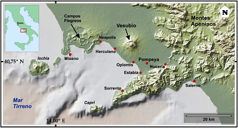

Monte Vesubio
Descripción física
La topografía está formada por dos elementos:
• el monte Somma al norte, rodeado parcialmente por el borde empinado de la cumbre de la caldera, originado por el derrumbe de una estructura anterior y más elevada.9
• el «Gran Cono» se originó durante la erupción del año 79. Por esta razón, al volcán también se le llama Somma-Vesubio.10
La caldera comenzó a formarse durante una erupción hace unos 17.000 años (o 18.300),10 ampliada por antiguas y violentas erupciones concluyendo con la del 79. Esta estructura ha tomado su nombre del término "volcán somma", el cual describe al volcán con una cumbre en caldera rodeada de un cono reciente.
La altura del cono principal ha cambiado constantemente por las erupciones, pero en el presente es de 1281 msnm.10 El monte Somma tiene 1149 msnm de alto, y está separado del cono principal por el valle de Atrio di Cavallo, de unos 5 km de extensión. Las laderas de la montaña están marcadas por los flujos de lava, con mucha vegetación, con matorrales en cotas altas y viñedos en las bajas. El Vesubio es un volcán activo, aunque su actividad corriente produzca más que nada vapor emanado desde las grietas al pie del cráter.
El Vesubio es un volcán compuesto, sito en el límite convergente donde la placa africana empieza a ser subducida debajo de la placa euroasiática. Su lava está compuesta de viscosa andesita. Capas de lava, escorias, cenizas, ypiedra pómez componen la montaña. En las laderas hay dos domos de lava, surgidos en 1891 y 1895.
El Vesubio se formó del resultado de la colisión de dos placas tectónicas, la africana y la euroasiática. La primera fue forzada por debajo de la segunda, llegando a mucha profundidad bajo la corteza terrestre. El material de la corteza fue calentado hasta fundirse, formando el magma. Puesto que el magma es menos denso que la roca sólida a su alrededor, es empujado hacia arriba, buscando un lugar más débil en la superficie de la Tierra, rompiéndola y formando el volcán.
Localización

El monte Vesubio es un volcán activo del tipo vesubiano situado frente a la bahía de Nápoles y a unos nueve kilómetros de distancia de la ciudad de Nápoles. Se encuentra en la provincia de Nápoles, perteneciente a la región italiana de la Campania.
Erupciones
Es famoso por la erupción que en el año 79 sepultó a las ciudades romanas de Pompeya y Herculano, permitiendo conservarlas intactas hasta que se redescubrieron en el siglo XVI, aunque las excavaciones sistemáticas comenzaron en 1738 y 1748, respectivamente. Hoy ambas ciudades son emplazamientos arqueológicos que permiten investigar la cultura romana y la vida de unas ciudades que han permanecido sin alteraciones desde la Edad Antigua. La erupción del año 79 supone, asimismo, la primera descripción histórica de una erupción vesubiana, realizada por Plinio el Joven, poco después de que sucediera. Debido a esto, los volcanes vesubianos son también conocidos como plinianos, y así también, por extensión, ese tipo de erupciones. Ha entrado en erupción muchas veces y hoy es considerado como uno de los volcanes más peligrosos del mundo, por la población de 3.000.000 de personas que viven en sus inmediaciones y la tendencia del Vesubio a tener erupciones explosivas.
Otras erupciones importantes son, secuencialmente, las del 472, 512, en 1631, seis veces en el siglo XVIII, ocho veces en el siglo XIX (notable la de 1872), y en 1906, 1929, y 1944. No ha habido erupciones desde 1944. Las erupciones variaron en gran medida en la gravedad, y se caracterizaron por explosivos estallidos. En ocasiones, las erupciones han sido tan grandes que la totalidad de la Europa meridional ha sido cubierta por cenizas; en 472 y en 1631, las cenizas del Vesubio cayeron sobre Constantinopla (Estambul), cubriendo una extensión aproximada de unos 1.600 km. Desde 1944, los desprendimientos de tierras del cráter han levantado nubes de polvo y ceniza, las cuales han provocado falsas alarmas de erupciones
Volcán Krakatoa
Historia
En 1927 comenzaron nuevas erupciones volcánicas en el fondo del mar, de las que surgió una nueva isla en el mismo lugar conocida como Anak Krakatau ('Hijo de Krakatoa'). Esta isla sobrepasó la superficie del mar en 1928, y en 1973 ya alcanzaba una altura de 190 metros. Sigue creciendo a razón de unos 5 metros por año. La isla está deshabitada. Algunos geólogos aseguran que algún día el Anak Krakatau reventará quizá con la misma fuerza que el volcán anterior[cita requerida]. Hoy en día la isla tiene forma de cono de unos 300 m de altura con un cráter lateral que le da una apariencia extraña al entorno.
Antes de la erupción de 1883, Krakatoa consistía en tres islas y varios islotes. Lang (que significa 'larga' en neerlandés), ahora llamada Rakata Kecil o Panjang, y Verlaten ('Abandonado' o 'Desierto'), ahora Sertung, eran los remanentes de borde de una erupción de caldera anterior muy grande. La isla Krakatoa en sí misma tenía 9 kilómetros de largo por 5 kilómetros de ancho. También había un islote cubierto por árboles cerca de Lang llamado Poolsche Hoed ('el Sombrero Polaco', al parecer porque ésta se parecía desde el mar a un sombrero con cuatro alas original de Cracovia, Polonia), y varias pequeñas rocas o bancos entre Krakatoa y Verlaten.
Había tres conos volcánicos sobre Krakatoa: yendo de Sur a Norte estaban: Rakata (823 m), Danan (445 m), y Perboewatan (también llamado Perbuatan; 122 m). Danan puede haber sido un volcán gemelo. Krakatoa está directamente encima de la zona de subducción eurasiática y la placa Indoaustraliana, donde las fronteras de la placa emprenden un cambio agudo de dirección, posiblemente causando una corteza excepcionalmente débil en la región.
Localización

Krakatoa fue una isla de tres conos volcánicos situada en el estrecho de Sonda, entre Java y Sumatra. Estaba localizada cerca de la región de subducción de la placa Indoaustraliana bajo la placa Euroasiática.
Anak Krakatoa
En 1927 comenzaron nuevas erupciones volcánicas en el fondo del mar, de las que surgió una nueva isla en el mismo lugar conocida como Anak Krakatau ('Hijo de Krakatoa'). Esta isla sobrepasó la superficie del mar en 1928, y en 1973 ya alcanzaba una altura de 190 metros. Sigue creciendo a razón de unos 5 metros por año. La isla está deshabitada. Algunos geólogos aseguran que algún día el Anak Krakatau reventará quizá con la misma fuerza que el volcán anterior[cita requerida]. Hoy en día la isla tiene forma de cono de unos 300 m de altura con un cráter lateral que le da una apariencia extraña al entorno.
Factores y características de la erupción y explosión

Antes se pensaba que las grandes explosiones fueron debidas a vapor extremadamente caliente, generado cuando las paredes del volcán se fracturaron y entró agua del océano dentro de la cámara de magma desatando un tsunami de escala nunca antes vista. Investigaciones actuales revelan que las primeras erupciones vaciaron parcialmente la cámara de magma, permitiendo la entrada de nuevo magma a temperaturas muy superiores, generando gases que incrementaron la presión de manera incontrolable, el nuevo magma además se mezcló con magma en ascenso, la combinación desató energías cataclísmicas
La isla hizo explosión, con una energía de 200 megatones, es decir, 10 000 veces más poderosa que la bomba atómica de Hiroshima. La explosión se percibió en un 10 % del globo terráqueo viajando hasta la isla de Madagascar y en Australia (ambas islas distan entre sí unos 7600 km). Los tsunamis subsiguientes a la explosión alcanzaron los 40 m de altura y destruyeron 163 aldeas (incluyendo el faro de una de ellas, Fourthfour Point, del que sólo quedó la base) a lo largo de la costa de Java y Sumatra, matando a un total de 36 417 personas. La ceniza de la explosión alcanzó los 80 km de altitud y además viajó por la superficie del mar. Tres años después, los observadores de todo el mundo describían el crepúsculo y el alba de brillante colorido, producido por la refracción de los rayos solares en esas partículas minúsculas.
Tamaño
Krakatoa era un estratovolcán, es decir, compuesto por la estratificación de lava, cenizas, piedra pómez y otros materiales piroclásticos. La isla tenía 9 kilómetros de largo, unos 5 kilómetros de ancho y unos 28 kilómetros cuadrados de superficie. Rakata, en el sur, tenía 813-820 metros de altura sobre el nivel del mar; Perbuatan, al norte, medía 120 metros de altura, y Danan, en el centro, registraba 445-450 metros de altura sobre el nivel del mar.
Aplicacion Tres, Prudente Carrera Mario Sinue